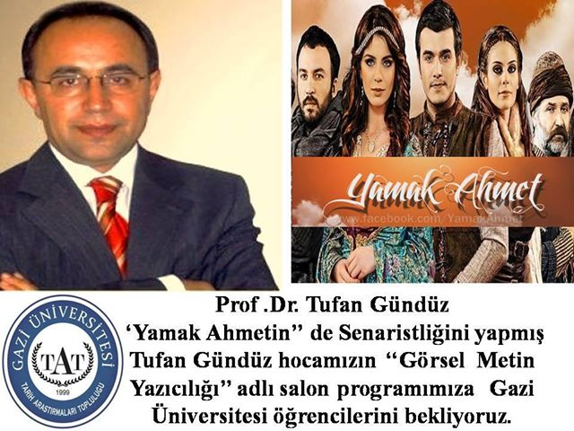
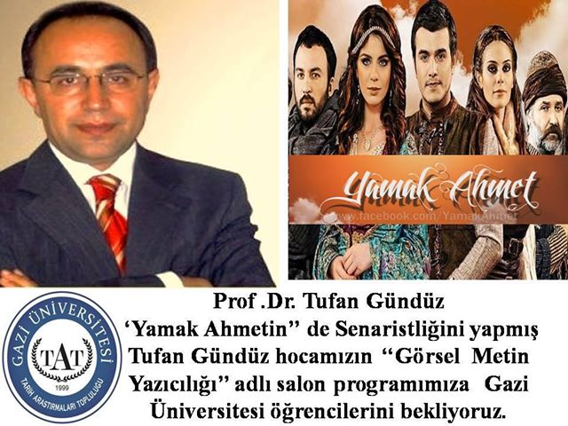

omer sahin 92 erzurum dogumluyum. ilk ve orta okul egitimlerimi erzurumda tamamladım. lisans egitimimi Gazi universitesinde tamamladim. ogrencilik yillarimda cesitli stklarda ve gazi tarih arastirma topluluklarinda gorev aldim.
Gazi tat universite dönemlerimde aktif görev aldığım ogrenci toplulugudur. 2010 - 2011 egitim dönemlerinde toplulugun baskanlık yaptım
gazi tat 
